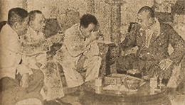

|
j
a v a s c r i p t |
Pg.3/3
December 7, 1944
Back home, Lombek informed me that Takashima and Kunishi were nowhere to be found. So Lombek, Duran and Campos left to try and see Ito directly. Not surprisingly, Ito didn't want to see anyone, though he left word that he'd send Kunishi later. Returning home, I found Duran and Tony Campos talking to Kunishi himself, who was trying to wriggle out with the excuse that he had to go "on duty." Takashima was sick, he said, but when pressed he agreed to send him over. By nightfall neither Takashima nor Kunishi had shown up. Lombek had already made up his mind: "The guarantee isn't worth a continental," he said. So there are saddened hearts in Manga Avenue tonight. Everyone knows the La'Os would be next — their air raid shelter is the finest in Manila. The topic of conversation tonight was Figueras. One said that Figueras was "protecting" a friend's house. If anyone wanted it, Figueras said that all he had to do was to offer them a better house instead. Everyone had a tale to tell on him, and even on his wife, who had been doing very well trading livestock, no doubt with passes, alcohol and trucks arranged with a bit of pull from Fukushima. So that's the situation. The Kempeitai played a double game on both sides — let the best man win. But the Embassy had the umpire on his side; and the umpire not only had a whistle but could also play Martial Law music or the funeral dirge on it. . . . .

League of Patriots — Ricarte,
Duran and Ramoz with Yamashita Tribune: "Three patriots lead New Movement to defend freedom." The Kalibapi having died due to Aquino's sudden pangs of materialistic conscience, the "Makapili" [League of Patriots] is being organized "to defend the Republic." The picture of Pio Duran, General Artemio Ricarte and Benigno Ramoz had all of Manila laughing. It's like having Ben Blue, Savvo and Zazu Pitts playing in "The Rosary." Without a radio I've no news. A friend told me that I'd begin to enter a period of deep mental depression within eight days without it. I'm sure he's right, but tonight I feel relieved — it's one worry less if we have to vacate suddenly. The moaning will come later, but so will new bombings to ease the pain. Yes, I've let my sweet radio go, that's why I'm feelin' low.... ...ooOoo... |
|
|
|
|